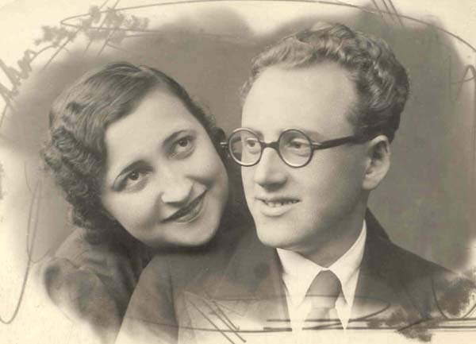
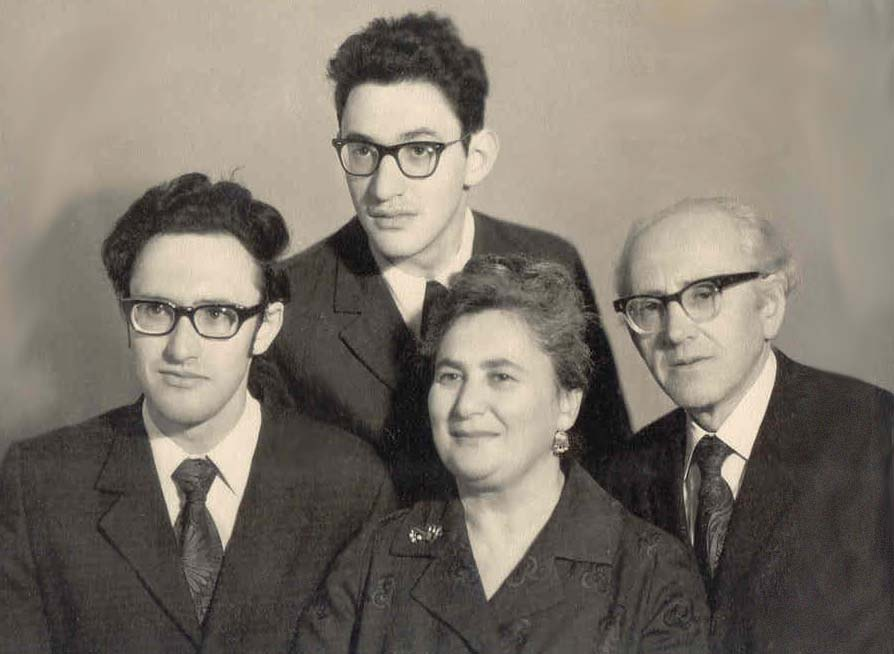
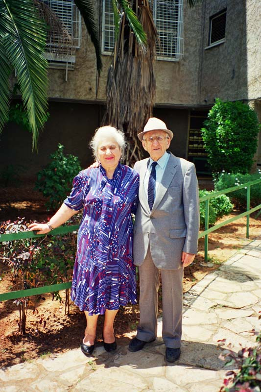

Арон Борисович родился 17 июля 1912 года в Староконстантинове.
Отец - Берл Иосифович Блехман.
Мать - Фейга Ароновна Блехман (Бронфман).
До 1925 года жил в Староконстантинове. Окончил семилетку в Киеве. Служил в армии. Окончил Уральский Лесотехнический институт в Свердловске. Специальность инженер механик лесотехнолог по механической обработке дерева.
Был 2 раза женат.
Первая жена вместе с сыном, которому не было и года, убита немцами в Староконстантинове в 1941 году.
В 1947 году женился вторично.
Вторая жена - Блехман (Цымринг) Людмила Давидовна родила ему двух сыновей: Бориса в 1950 году и Даниила в 1955 году.
После войны жил в Москве. Работал инженером на мебельной фабрике, потом главным инженером - конструктором. Ушел на пенсию.
В 1990 году переехал в Ришон-ле-Цион (Израиль).
Умер 3 декабря 1997 года в Ришон-ле-Ционе.
Эту почти невероятную историю я слышал в детстве много раз, от бабушки Бикенеш, от мамы и от папы.
После освобождения Украины от немцев, в 1944 году, мой дедушка Марк и папин двоюродный брат Арон поехали на Украину в Староконстантинов, где до войны жили жена, малолетний сын, отец и брат Арона. Там же жило много других родственников. Дедушка получил разрешение на эту поездку, как корреспондент ТАСС. Конечно, никого из родственников они не нашли. Всех убили немцы. Но на Украине они подобрали еврейскую девочку Люсю. История Люси была необычна.
Когда в городок, где жила Люся, пришли немцы, ей было 12 лет. Всех евреев, включая Люсю и всю ее семью, немцы поставили около рва и расстреляли. Но Люсе “повезло”. На нее упал труп матери, и немцы не заметили, что она осталась живой. Ночью Люся вылезла изо рва и постучала в ближайший дом. И тут ей повезло второй раз. Люди, жившие в этом доме, не только ни выдали ее немцам, но и дали одежду и еду. Правда они сказали, чтобы она немедленно уходила: за помощь евреям полагался расстрел. Одному богу известно, каким чудом эта девочка смогла выжить несколько лет при немцах. Ее никто не прятал, ей никто не помогал, наоборот несколько человек подозревали, что она еврейка, и всячески провоцировали ее, чтобы выдать немцам. Так одна из женщин, на которую она работала, будила ее посреди ночи и говорила, что ищут евреев, чтобы посмотреть Люсину реакцию со сна. Сама тетя Люся считала, что ее спасло хорошее знание украинского языка и речь без еврейского акцента.
Конечно, дедушка и дядя Арон забрали Люсю с собой, в Москву.
Через несколько лет Люся влюбилась в дядю Арона. Все попытки Арона отговорить ее, так как разница в возрасте была почти 20 лет, закончились ничем. Возможно, этим попыткам не хватало твердости, так как, по словам мамы, Люся была очаровательной девушкой. Дядя Арон и Люся поженились. Они прожили долгую и счастливую совместную жизнь. Люся родила Арону двух сыновей: Борю и Даню. В 1990 году Арон, Люся и Даня с семьей уехали в Израиль. Показания Людмилы Давидовны записаны в мемориальном музее “Яд ваШем”. В 1995 году я навестил тетю Люсю и дядю Арона в их небольшой двухкомнатной квартире Ришон-ле-Ционе.
Живя в Москве, Арон совсем не соблюдал религиозные обряды, но в последние годы жизни, в Израиле, он стал религиозным человеком, часто ходил в синагогу, на дверях их квартиры была прибита мезуза.
Из воспоминаний Виктора Баккала.


